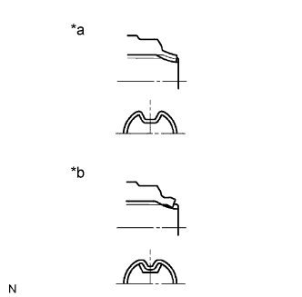

РАЗДАТОЧНАЯ КОРОБКА В СБОРЕ > ПОВТОРНАЯ СБОРКА |
| 1. УСТАНОВИТЕ КОРОННУЮ ШЕСТЕРНЮ НИЖНЕЙ ПЛАНЕТАРНОЙ ПЕРЕДАЧИ РАЗДАТОЧНОЙ КОРОБКИ |
Установите коронную шестерню нижней планетарной передачи на передний картер раздаточной коробки.
 |
С помощью отвертки установите пружинное стопорное кольцо.
| 2. УСТАНОВИТЕ ШТИФТ |
 |
Установите штырь.
| 3. УСТАНОВИТЕ ПРУЖИНУ СЖАТИЯ |
Установите пружину.
| 4. УСТАНОВИТЕ ПРОБКУ КАРТЕРА РАЗДАТОЧНОЙ КОРОБКИ |
Установите пробку картера раздаточной коробки.
| 5. УСТАНОВИТЕ ПЛОСКУЮ ШАЙБУ ВЫХОДНОГО ВАЛА РАЗДАТОЧНОЙ КОРОБКИ |
 |
Установите шайбу.
| 6. УСТАНОВИТЕ ПОДШИПНИК ВЕДУЩЕЙ ЗВЕЗДОЧКИ РАЗДАТОЧНОЙ КОРОБКИ |
Установите подшипник.
| 7. УСТАНОВИТЕ ВЕДУЩУЮ ЗВЕЗДОЧКУ РАЗДАТОЧНОЙ КОРОБКИ В СБОРЕ |
Установите ведущую звездочку раздаточной коробки.
| 8. УСТАНОВИТЕ РАСПОРНУЮ ВТУЛКУ ВЫХОДНОГО ВАЛА РАЗДАТОЧНОЙ КОРОБКИ № 1 |
Установите распорную втулку выходного вала.
| 9. УСТАНОВИТЕ ЗАДНИЙ РАДИАЛЬНЫЙ ШАРИКОВЫЙ ПОДШИПНИК ВЫХОДНОГО ВАЛА РАЗДАТОЧНОЙ КОРОБКИ |
С помощью SST и пресса установите новый подшипник.
| *1 | Канавка |
 | Задняя сторона |
| 10. УСТАНОВИТЕ ПЛОСКУЮ ШАЙБУ ВЫХОДНОГО ВАЛА РАЗДАТОЧНОЙ КОРОБКИ |
Установите шайбу.
| 11. УСТАНОВИТЕ ПЕРЕДНИЙ ИГОЛЬЧАТЫЙ РОЛИКОВЫЙ ПОДШИПНИК ВЫХОДНОГО ВАЛА РАЗДАТОЧНОЙ КОРОБКИ |
Установите игольчатый роликовый подшипник.
| 12. УСТАНОВИТЕ СТУПИЦУ МУФТЫ РАЗДАТОЧНОЙ КОРОБКИ |
Установите ступицу муфты раздаточной коробки.
| 13. УСТАНОВИТЕ КОРПУС МЕЖОСЕВОГО ДИФФЕРЕНЦИАЛА |
 |
Установите корпус межосевого дифференциала.
| 14. УСТАНОВИТЕ ШАРИК РАСПОРНОЙ ВТУЛКИ ВЫХОДНОГО ВАЛА РАЗДАТОЧНОЙ КОРОБКИ |
Установите шарик.
| 15. УСТАНОВИТЕ РАСПОРНУЮ ВТУЛКУ ВЫХОДНОГО ВАЛА РАЗДАТОЧНОЙ КОРОБКИ № 2 |
Установите распорную втулку.
С помощью съемника стопорных колец установите пружинное стопорное кольцо.
| 16. ПРОВЕРЬТЕ РАДИАЛЬНЫЙ ЗАЗОР ВЕДУЩЕЙ ЗВЕЗДОЧКИ |
 |
С помощью индикатора часового типа измерьте радиальный зазор ведущей звездочки.
| 17. ПРОВЕРЬТЕ ОСЕВОЙ ЗАЗОР ВЕДУЩЕЙ ЗВЕЗДОЧКИ |
С помощью комплекта плоских щупов измерьте осевой зазор ведущей звездочки.
| 18. УСТАНОВИТЕ ПОДШИПНИК ПЕРВИЧНОГО ВАЛА РАЗДАТОЧНОЙ КОРОБКИ |
С помощью SST и пресса установите новый подшипник канавкой вперед.
| 19. УСТАНОВИТЕ ПРУЖИННОЕ СТОПОРНОЕ КОЛЬЦО ПОДШИПНИКА ПЕРВИЧНОГО ВАЛА РАЗДАТОЧНОЙ КОРОБКИ |
Подберите новое пружинное стопорное кольцо, обеспечивающее минимальный осевой зазор.
| Метка | Заданные условия |
| 1 | 1,45 - 1,50 мм (0,0571 - 0,0591 дюйма) |
| 2 | 1,50 - 1,55 мм (0,0591 - 0,0610 дюйма) |
| 3 | 1,55 - 1,60 мм (0,0610 - 0,0630 дюйма) |
| 4 | 1,60 - 1,65 мм (0,0630 - 0,0650 дюйма) |
| 5 | 1,65 - 1,70 мм (0,0650 - 0,0669 дюйма) |
С помощью съемника стопорных колец установите пружинное стопорное кольцо.
| 20. УСТАНОВИТЕ ШЛИЦЕВУЮ ЧАСТЬ ПЛАНЕТАРНОЙ ПЕРЕДАЧИ НИЗШЕЙ СТУПЕНИ РАЗДАТОЧНОЙ КОРОБКИ |
 |
С помощью отвертки установите шлицевую часть планетарной передачи низшей ступени и пружинное стопорное кольцо.
| 21. УСТАНОВИТЕ ПОДШИПНИК ПЛАНЕТАРНОЙ ПЕРЕДАЧИ НИЗШЕЙ СТУПЕНИ РАЗДАТОЧНОЙ КОРОБКИ |
С помощью SST и пресса запрессуйте новый подшипник планетарной передачи низшей ступени.
| 22. УСТАНОВИТЕ УПЛОТНИТЕЛЬНОЕ КОЛЬЦО ПЕРВИЧНОГО ВАЛА РАЗДАТОЧНОЙ КОРОБКИ № 1 |
Нанесите трансмиссионное масло на 2 новых уплотнительных кольца.
Установите 2 уплотнительных кольца на первичный вал.
| 23. УСТАНОВИТЕ УПОРНЫЙ ПОДШИПНИК ПЛАНЕТАРНОЙ ПЕРЕДАЧИ НИЗШЕЙ СТУПЕНИ РАЗДАТОЧНОЙ КОРОБКИ |
Установите подшипник.
| Передняя сторона |
| 24. УСТАНОВИТЕ КОЛЬЦО УПОРНОГО ПОДШИПНИКА РАЗДАТОЧНОЙ КОРОБКИ № 1 |
Установите кольцо упорного подшипника.
| 25. УСТАНОВИТЕ ПЕРВИЧНЫЙ ВАЛ РАЗДАТОЧНОЙ КОРОБКИ |
Установите первичный вал раздаточной коробки.
| 26. УСТАНОВИТЕ ШАЙБУ ВОДИЛА ПЛАНЕТАРНОЙ ПЕРЕДАЧИ МЕХАНИЧЕСКОЙ РАЗДАТОЧНОЙ КОРОБКИ |
Установите шайбу.
| 27. УСТАНОВИТЕ ШАРИКОВЫЙ ФИКСАТОР ПЕРВИЧНОЙ ШЕСТЕРНИ РАЗДАТОЧНОЙ КОРОБКИ |
Установите шарик.
| 28. УСТАНОВИТЕ СТОПОР ПЕРВИЧНОЙ ШЕСТЕРНИ РАЗДАТОЧНОЙ КОРОБКИ |
Установите стопор первичной шестерни.
| 29. УСТАНОВИТЕ ПРУЖИННОЕ СТОПОРНОЕ КОЛЬЦО ВАЛА СТОПОРА ПЕРВИЧНОЙ ШЕСТЕРНИ РАЗДАТОЧНОЙ КОРОБКИ |
 |
Подберите новое пружинное стопорное кольцо вала стопора первичной шестерни, обеспечивающее осевой зазор 0,05-0,15 мм (0,00197-0,00590 дюйма).
| Метка | Заданные условия |
| А | 2,10 - 2,15 мм (0,0827 - 0,0846 дюйма) |
| B | 2,15 - 2,20 мм (0,0846 - 0,0866 дюйма) |
| C | 2,20 - 2,25 мм (0,0866 - 0,0886 дюйма) |
| D | 2,25 - 2,30 мм (0,0886 - 0,0906 дюйма) |
| E | 2,30 - 2,35 мм (0,0906 - 0,0925 дюйма) |
| F | 2,35 - 2,40 мм (0,0925 - 0,0945 дюйма) |
| G | 2,40 - 2,45 мм (0,0945 - 0,0965 дюйма) |
| H | 2,45 - 2,50 мм (0,0965 - 0,0984 дюйма) |
| J | 2,50 - 2,55 мм (0,0984 - 0,100 дюйма) |
| K | 2,55 - 2,60 мм (0,100 - 0,102 дюйма) |
| L | 2,60 - 2,65 мм (0,102 - 0,104 дюйма) |
| M | 2,65 - 2,70 мм (0,104 - 0,106 дюйма) |
| N | 2,70 - 2,75 мм (0,106 - 0,108 дюйма) |
| P | 2,75 - 2,80 мм (0,108 - 0,110 дюйма) |
| Q | 2,80 - 2,85 мм (0,110 - 0,112 дюйма) |
| R | 2,85 - 2,90 мм (0,112 - 0,114 дюйма) |
| S | 2,90 - 2,95 мм (0,114 - 0,116 дюйма) |
| T | 2,95 - 3,00 мм (0,116 - 0,118 дюйма) |
| U | 3,00 - 3,05 мм (0,118 - 0,120 дюйма) |
 |
С помощью съемника стопорных колец установите пружинное стопорное кольцо.
| 30. УСТАНОВИТЕ ПЛАНЕТАРНУЮ ПЕРЕДАЧУ НИЗШЕЙ СТУПЕНИ В СБОРЕ С ПЕРВИЧНЫМ ВАЛОМ РАЗДАТОЧНОЙ КОРОБКИ В СБОРЕ |
 |
Установите планетарную передачу низшей ступени вместе с первичным валом.
 |
С помощью съемника стопорных колец установите пружинное стопорное кольцо вала.
| 31. УСТАНОВИТЕ ШЕСТЕРНЮ МАСЛЯНОГО НАСОСА РАЗДАТОЧНОЙ КОРОБКИ |
Установите шестерню масляного насоса раздаточной коробки.
| 32. УСТАНОВИТЕ КОЛЬЦЕВОЕ УПЛОТНЕНИЕ КОРПУСА МАСЛЯНОГО НАСОСА РАЗДАТОЧНОЙ КОРОБКИ |
 |
Смажьте новое кольцевое уплотнение трансмиссионным маслом и установите его на корпус масляного насоса.
| 33. УСТАНОВИТЕ КОРПУС МАСЛЯНОГО НАСОСА РАЗДАТОЧНОЙ КОРОБКИ В СБОРЕ |
 |
Установите корпус масляного насоса и закрепите его 3 болтами.
| 34. УСТАНОВИТЕ МАГНИТ КАРТЕРА РАЗДАТОЧНОЙ КОРОБКИ |
| 35. УСТАНОВИТЕ МАСЛООТДЕЛИТЕЛЬ РАЗДАТОЧНОЙ КОРОБКИ В СБОРЕ |
 |
Установите маслоотделитель и закрепите его 3 болтами.
| 36. УСТАНОВИТЕ ПРОБКУ НАЛИВНОГО ОТВЕРСТИЯ |
Установите новую прокладку и пробку наливного отверстия.
| 37. УСТАНОВИТЕ ПРОБКУ СЛИВНОГО ОТВЕРСТИЯ |
Установите новую прокладку и пробку сливного отверстия.
| 38. УСТАНОВИТЕ ПРИВОД ПЕРЕКЛЮЧЕНИЯ РАЗДАТОЧНОЙ КОРОБКИ В СБОРЕ |
Установите привод переключения и закрепите его 3 болтами.
С помощью отвертки и молотка вбейте 2 пружинных стопорных кольца.
| 39. УСТАНОВИТЕ РАДИАЛЬНЫЙ ШАРИКОВЫЙ ПОДШИПНИК ПЕРВИЧНОЙ ШЕСТЕРНИ РАЗДАТОЧНОЙ КОРОБКИ |
С помощью SST и пресса установите новый радиальный шариковый подшипник первичной шестерни.
| 40. УСТАНОВИТЕ ПОДШИПНИК ВЕДОМОЙ ЗВЕЗДОЧКИ РАЗДАТОЧНОЙ КОРОБКИ |
С помощью SST и пресса установите новый подшипник ведомой звездочки.
| 41. УСТАНОВИТЕ ЗАДНИЙ ВЫХОДНОЙ ВАЛ В СБОРЕ, ПЕРЕДНЮЮ ПРИВОДНУЮ ЦЕПЬ И ВЕДОМУЮ ЗВЕЗДОЧКУ В СБОРЕ |
 |
Установите задний выходной вал и ведущую звездочку на переднюю приводную цепь.
 |
Установите задний выходной вал, переднюю приводную цепь и ведомую звездочку на задний картер раздаточной коробки.
С помощью съемника стопорных колец установите пружинное стопорное кольцо.
| 42. УСТАНОВИТЕ ВИЛКУ БЛОКИРОВКИ МЕЖОСЕВОГО ДИФФЕРЕНЦИАЛА В СБОРЕ С ПЕРЕДНЕЙ СОЕДИНИТЕЛЬНОЙ МУФТОЙ ПРИВОДА |
 |
Установите вилку блокировки межосевого дифференциала и переднюю соединительную муфту привода.
| Передняя сторона |
Заверните болт.
С помощью отвертки и молотка вбейте пружинное стопорное кольцо.
| 43. УСТАНОВИТЕ ВИЛКУ ПЕРЕКЛЮЧЕНИЯ ПЕРЕДАЧ РАЗДАТОЧНОЙ КОРОБКИ № 2 В СБОРЕ С СОЕДИНИТЕЛЬНОЙ МУФТОЙ ВЫСШЕЙ И НИЗШЕЙ ПЕРЕДАЧ РАЗДАТОЧНОЙ КОРОБКИ |
 |
Установите вилку переключения передач № 2 и соединительную муфту высшей и низшей передач.
| Передняя сторона |
Заверните болт.
| 44. УСТАНОВИТЕ ПЕРЕДНИЙ ИГОЛЬЧАТЫЙ РОЛИКОВЫЙ ПОДШИПНИК ВЫХОДНОГО ВАЛА РАЗДАТОЧНОЙ КОРОБКИ |
Установите игольчатый роликовый подшипник на первичный вал.
| 45. УСТАНОВИТЕ РАСПОРНУЮ ВТУЛКУ ВЫХОДНОГО ВАЛА РАЗДАТОЧНОЙ КОРОБКИ |
Установите распорную втулку выходного вала раздаточной коробки на первичный вал.
| 46. УСТАНОВИТЕ ЗАДНИЙ КАРТЕР РАЗДАТОЧНОЙ КОРОБКИ |
Нанесите герметик на задний картер раздаточной коробки, как показано на рисунке.
| *1 | Герметик |
 |
Установите зажим и закрепите задний картер раздаточной коробки 12 болтами.
| 47. УСТАНОВИТЕ КОЛЬЦО |
Установите манжету.
| 48. УСТАНОВИТЕ ШАЙБУ ВЫХОДНОГО ВАЛА РАЗДАТОЧНОЙ КОРОБКИ |
Установите 2 шайбы.
| 49. УСТАНОВИТЕ УДЛИНИТЕЛЬ КАРТЕРА РАЗДАТОЧНОЙ КОРОБКИ В СБОРЕ |
 |
Нанесите герметик на удлинитель картера, как показано на рисунке.
| *1 | Герметик |
Нанесите герметик-фиксатор на резьбу болтов.
 |
Установите удлинитель картера трансмиссии и закрепите его 5 болтами.
| 50. УСТАНОВИТЕ ЗАДНИЙ САЛЬНИК КАРТЕРА РАЗДАТОЧНОЙ КОРОБКИ |
Покройте кромку нового сальника универсальной консистентной смазкой.
С помощью SST и молотка запрессуйте сальник так, чтобы его поверхность оказалась заподлицо с верхней поверхностью картера.
| 51. УСТАНОВИТЕ САЛЬНИК ЗАДНЕГО СОЕДИНИТЕЛЬНОГО ФЛАНЦА ВЫХОДНОГО ВАЛА РАЗДАТОЧНОЙ КОРОБКИ |
 |
С помощью SST и молотка установите новый сальник.
Покройте кромку сальника универсальной консистентной смазкой.
| 52. УСТАНОВИТЕ СОЕДИНИТЕЛЬНЫЙ ФЛАНЕЦ ЗАДНЕГО ВЫХОДНОГО ВАЛА В СБОРЕ |
 |
Нанесите трансмиссионное масло на контактные поверхности соединительного фланца и выходного вала.
Установите соединительный фланец на выходной вал.
| Задняя сторона |
Удерживая соединительный фланец с помощью SST, заверните новую контргайку.
|  |
Накерните контргайку с помощью молотка и зубила.
| *a | Правильно |
| *b | Неправильно |
| 53. УСТАНОВИТЕ ПЕРЕДНИЙ САЛЬНИК КАРТЕРА РАЗДАТОЧНОЙ КОРОБКИ |
Покройте кромку нового сальника универсальной консистентной смазкой.
С помощью SST и молотка запрессуйте сальник так, чтобы его металлическое кольцо соприкасалось с картером.
| 54. УСТАНОВИТЕ САЛЬНИК ПЕРЕДНЕГО СОЕДИНИТЕЛЬНОГО ФЛАНЦА ВЫХОДНОГО ВАЛА РАЗДАТОЧНОЙ КОРОБКИ |
|
С помощью SST и молотка установите новый сальник.
Покройте кромку сальника универсальной консистентной смазкой.
| 55. УСТАНОВИТЕ СОЕДИНИТЕЛЬНЫЙ ФЛАНЕЦ ПЕРЕДНЕГО ВЫХОДНОГО ВАЛА В СБОРЕ |
Нанесите трансмиссионное масло на контактные поверхности соединительного фланца и ведомой звездочки.
Установите соединительный фланец на ведомую звездочку.
| Передняя сторона |
Удерживая соединительный фланец с помощью SST, заверните новую контргайку.
Накерните контргайку с помощью молотка и зубила.
| *a | Правильно |
| *b | Неправильно |
| 56. УСТАНОВИТЕ МАСЛООТРАЖАТЕЛЬ САПУНА |
Установите маслоотражатель.
| 57. УСТАНОВИТЕ КРЫШКУ КАРТЕРА РАЗДАТОЧНОЙ КОРОБКИ В СБОРЕ |
 |
Установите крышку картера и закрепите ее 4 болтами.
| 58. УСТАНОВИТЕ САЛЬНИК СЕПАРАТОРА ПРАВОГО ПОДШИПНИКА КАЧЕНИЯ РАЗДАТОЧНОЙ КОРОБКИ |
Используя SST и молоток, вбейте новый сальник так, чтобы его поверхность оказалась заподлицо с верхней поверхностью сепаратор.
Покройте кромку сальника универсальной консистентной смазкой.
| 59. УСТАНОВИТЕ СЕПАРАТОР ПРАВОГО ПОДШИПНИКА РАЗДАТОЧНОЙ КОРОБКИ В СБОРЕ |
 |
Нанесите герметик на сепаратор подшипника, как показано на рисунке.
| *1 | Герметик |
Нанесите герметик на резьбу болтов
Установите держатель и закрепите его 5 болтами.
| 60. УСТАНОВИТЕ ШЛАНГ |
Установите шланг и закрепите его зажимом.